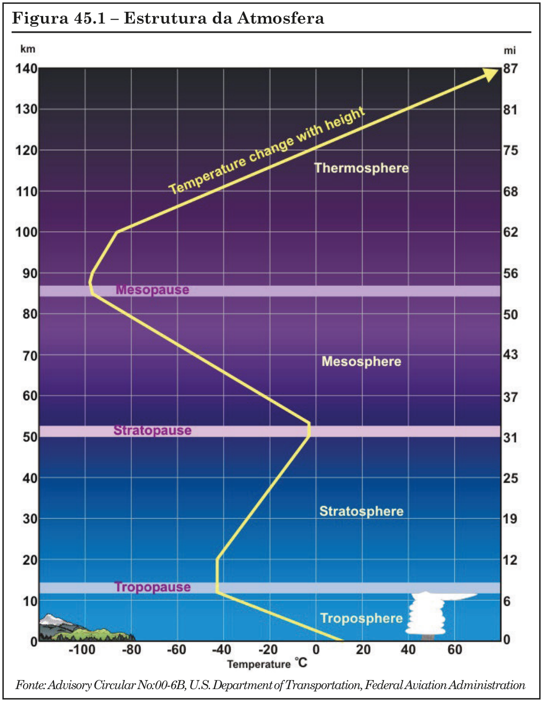
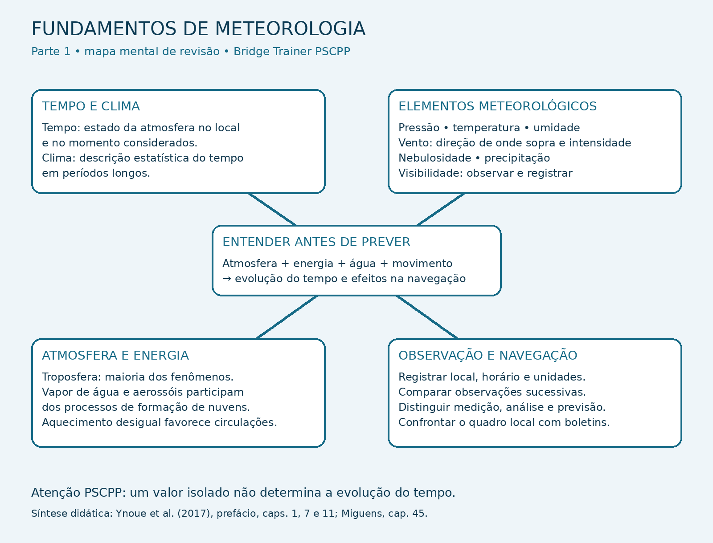
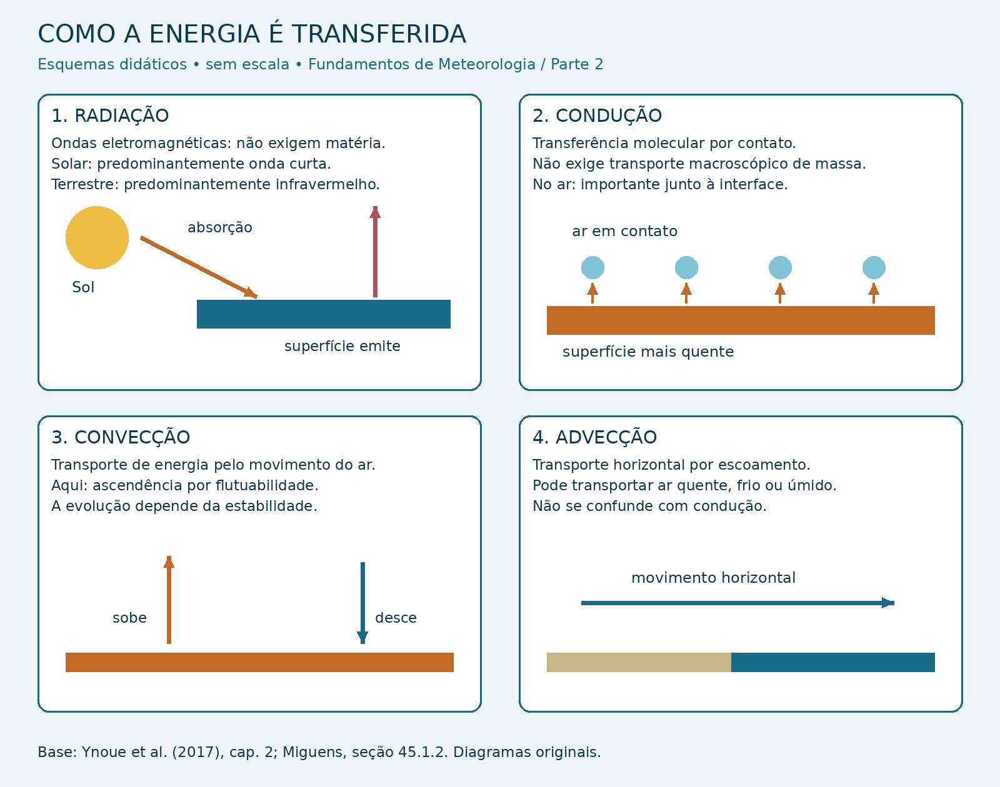
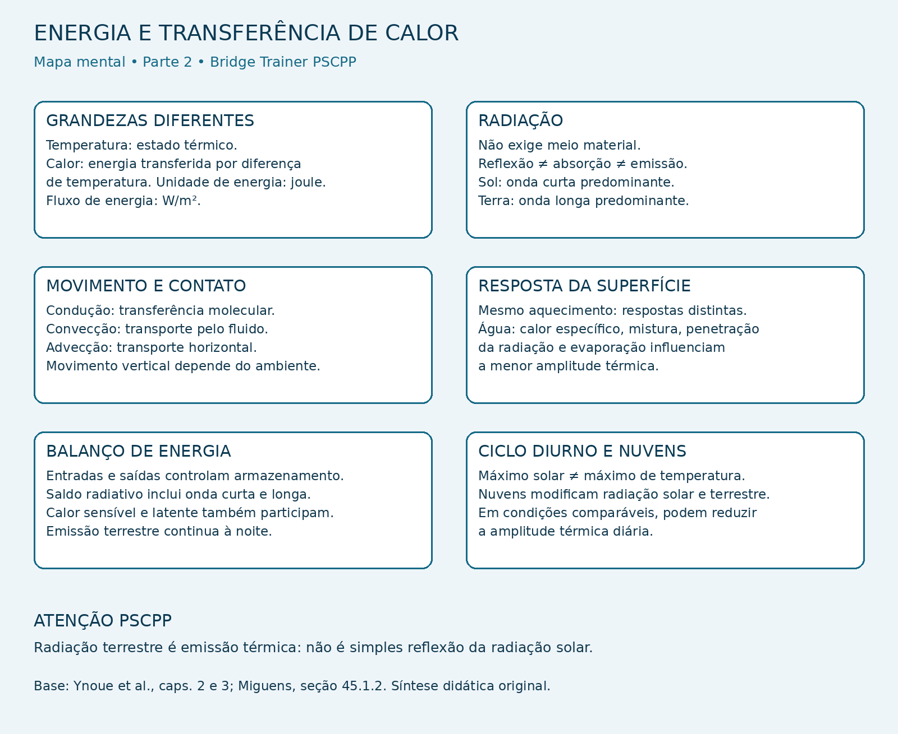
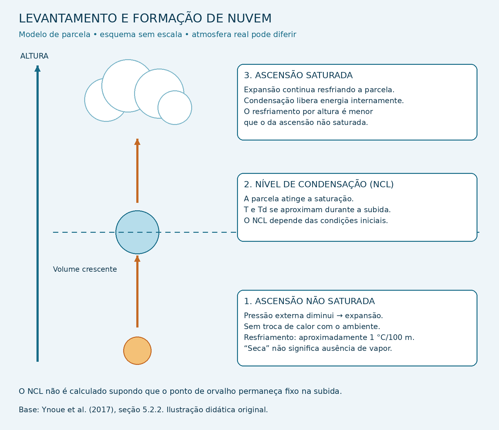
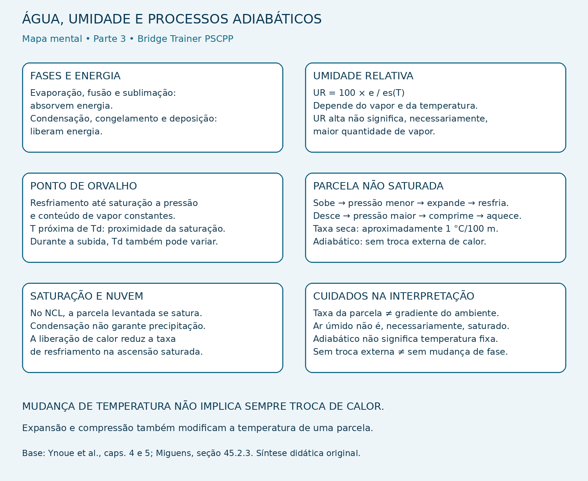
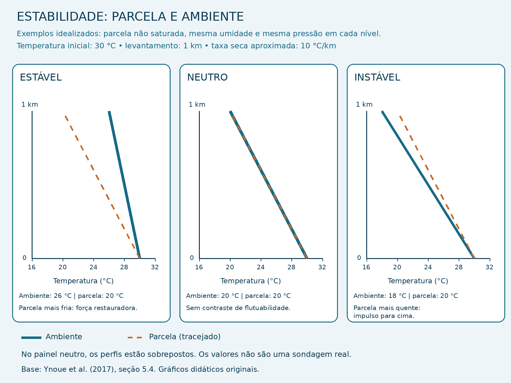

⚓ Fundamentos de Meteorologia
Fundamentals of Meteorology — Fundamentos de Meteorologia
Base conceitual para compreender os elementos meteorológicos, os processos físicos da atmosfera e a utilização das informações de tempo na navegação.
O objetivo desta aula é estabelecer o raciocínio necessário às aulas específicas da disciplina: identificar o que está sendo observado, compreender quais processos podem explicar a observação e reconhecer os limites da interpretação.
A condição meteorológica resulta da interação entre energia, água, propriedades do ar e movimento atmosférico. Por isso, seus elementos devem ser estudados em conjunto, considerando o espaço e o tempo.
📊 Progresso da Aula
0% da aula concluída
📘 Identificação da aula
Disciplina: Meteorologia
Assunto: Fundamentos de Meteorologia
Termo técnico principal: Fundamentals of Meteorology
Nível: PSCPP
Finalidade: estabelecer as bases conceituais e físicas para o estudo dos assuntos específicos de Meteorologia e Oceanografia.
⏱ Cronômetro de Estudo
📖 Estudo
Estude com concentração durante o ciclo e utilize a pausa para descansar antes de iniciar uma nova sessão.
📋 Conteúdo programático
V — Meteorologia e Oceanografia.
Vinculação principal: item 16 — Elementos meteorológicos.
Nesta aula, os elementos são apresentados de forma integrada. Seu aprofundamento ocorrerá nos assuntos específicos da disciplina.
- 16.1. Radiação solar.
- 16.2 e 16.3. Temperatura do ar e da superfície do mar.
- 16.4 e 16.5. Pressão atmosférica e umidade do ar.
- 16.6 e 16.7. Evaporação e condensação.
- 16.8 a 16.10. Nebulosidade, nuvens e precipitação.
- 16.11 a 16.13. Nevoeiro, névoa e visibilidade.
Integrações conceituais: item 6, Climatologia; item 17.1, ar estável e ar instável; item 18.1, processo convectivo; e item 21, interpretação de informações meteorológicas.
⚠ Delimitação do estudo
A apresentação de um conceito nesta aula não equivale ao cumprimento integral do respectivo item do programa.
Medições, classificações, mecanismos, interpretação de produtos e aplicações serão aprofundados nas aulas correspondentes.
Tópicos da Parte 1
- Meteorologia, tempo e clima.
- Elementos meteorológicos e relações físicas.
- Atmosfera, água e ambiente dos fenômenos.
- Observação, análise, previsão e aplicação.
🎯 Objetivos de aprendizagem
Ao concluir esta aula, o aluno deverá ser capaz de:
- Distinguir tempo atmosférico, clima, observação e previsão.
- Identificar os elementos meteorológicos e explicar por que sua interpretação deve ser integrada.
- Distinguir temperatura do ar e temperatura da superfície do mar.
- Reconhecer a função meteorológica do vapor de água e das mudanças de fase.
- Relacionar o aquecimento desigual ao desenvolvimento de diferenças nas propriedades e no movimento do ar.
- Reconhecer que estabilidade e movimento vertical influenciam a formação de nuvens e a evolução do tempo.
- Interpretar observações com atenção à posição, ao horário, às unidades e à referência da grandeza.
- Reconhecer as limitações de um diagnóstico baseado em um único indício.
📚 Publicações utilizadas
Ynoue e colaboradores — Meteorologia: noções básicas
Autores: Rita Yuri Ynoue, Michelle Simões Reboita, Tércio Ambrizzi e Gyrlene Aparecida Mendes da Silva.
Publicação: Oficina de Textos, 2017.
Trechos utilizados na Parte 1: prefácio; capítulo 1, composição e estrutura da atmosfera; capítulo 7, seção 7.1, tipos de observação; e capítulo 11, seção 11.1, definição de tempo e clima.
Base para o desenvolvimento das próximas partes: capítulos 2 a 6, sobre energia, temperatura, umidade, estabilidade, pressão e ventos.
Miguens — Navegação: a Ciência e a Arte, Volume III
Recorte bibliográfico: capítulo 45 — Noções de Meteorologia para Navegantes.
Trechos utilizados na Parte 1: seção 45.1.1, composição e estrutura da atmosfera; seção 45.1.2, aquecimento e resfriamento; seção 45.2, elementos meteorológicos; e seção 45.5, informações e observação para a previsão do tempo a bordo.
Figura mantida: Figura 45.1 — Estrutura da Atmosfera, página interna 45-2.
Critério de fidelidade às referências
Os conceitos são apresentados como sínteses das publicações consultadas. Os exemplos de aplicação são identificados como didáticos.
As demais obras da bibliografia serão utilizadas nas aulas correspondentes, conforme a disponibilidade dos trechos necessários.
O anexo de questões de Meteorologia e Oceanografia é material complementar e não substitui o livro completo de Lobo e Soares.
🗂 Organização da aula
- Parte 1: conceitos, elementos meteorológicos e observação do tempo.
- Parte 2: energia, calor, temperatura e mecanismos de transferência.
- Parte 3: água na atmosfera, mudanças de fase e fundamentos dos processos adiabáticos.
- Parte 4: fundamentos da estabilidade, integração física e exercícios comentados.
A aula de Fundamentos fornece a preparação para o aprofundamento dos assuntos. Não substitui as aulas de atmosfera, temperatura e umidade, pressão, ventos, circulação ou sistemas meteorológicos.
PARTE 1 — Conceitos, elementos meteorológicos e observação do tempo
A primeira etapa da interpretação meteorológica é identificar corretamente o que está sendo observado. A segunda é compreender como os elementos se relacionam.
Nesta parte, estudaremos a diferença entre tempo e clima, a função dos elementos meteorológicos, o ambiente atmosférico dos fenômenos e a distinção entre observação, análise e previsão.
1. Meteorologia, tempo e clima
1.1. O que a Meteorologia estuda
A Meteorologia estuda os processos físicos, químicos e dinâmicos da atmosfera e suas interações com os demais componentes do sistema terrestre.
Esse estudo envolve propriedades do ar, radiação, trocas de calor, água em diferentes estados físicos e movimentos atmosféricos.
Na aplicação marítima, a atmosfera deve ser considerada em interação com o oceano. As condições do ar e da superfície do mar participam das trocas de calor, de umidade e de quantidade de movimento.
1.2. Tempo atmosférico
Tempo atmosférico é o estado da atmosfera em determinado local e momento.
Sua descrição utiliza variáveis como temperatura, pressão, umidade, vento, nebulosidade, precipitação e visibilidade.
Uma observação precisa estar situada no espaço e no tempo. A descrição de um fenômeno sem posição ou horário pode não servir à decisão de navegação pretendida.
Exemplo didático — condição observada
“Na entrada do canal, às 12:00 UTC, há vento de sul, chuva e redução de visibilidade.”
A frase descreve o tempo atmosférico em um local e horário determinados.
Para tornar o registro mais completo, devem ser acrescentadas a intensidade do vento, a visibilidade estimada ou medida e as demais informações disponíveis.
1.3. Clima
Clima corresponde à descrição estatística das condições atmosféricas ao longo de períodos extensos.
A caracterização climática considera condições predominantes e sua variabilidade. Não se resume à descrição de um episódio nem determina o tempo de uma data específica.
Na seção 11.1, Ynoue e colaboradores apresentam os períodos de 30 anos utilizados nas normais climatológicas.
Exemplo didático — informação climática
“A região apresenta maior frequência de nevoeiros em determinada época do ano.”
Essa informação orienta o planejamento sazonal. Entretanto, não demonstra que haverá nevoeiro no horário de entrada de um navio.
1.4. Uso das informações na navegação
A informação climatológica auxilia o planejamento de viagens, a comparação de condições sazonais e a identificação de padrões regionais.
A observação informa o que está ocorrendo no local e horário considerados. A previsão estima as condições futuras.
Essas informações se complementam. A decisão operacional exige reconhecer a finalidade e a validade de cada uma.
🌐 Termos técnicos
- Meteorology — Meteorologia.
- Weather — tempo atmosférico.
- Climate — clima.
- Climatological normal — normal climatológica.
- Weather forecast — previsão do tempo.
⚠ Atenção PSCPP
Uma ocorrência isolada de tempo severo não caracteriza, por si só, o clima de uma região.
Uma característica climática também não permite afirmar exatamente o que ocorrerá em uma manobra específica.
Referência: Ynoue e colaboradores, prefácio e seção 11.1.
2. Elementos meteorológicos e relações físicas fundamentais
Os elementos meteorológicos descrevem aspectos relacionados do estado da atmosfera. Sua interpretação deve considerar o valor observado, sua evolução e sua distribuição espacial.
2.1. Radiação solar
A radiação solar é a principal fonte de energia dos processos meteorológicos estudados nesta disciplina.
Parte da energia incidente é refletida e parte é absorvida pelo sistema superfície-atmosfera.
A distribuição desigual da energia contribui para diferenças térmicas e para os movimentos que redistribuem energia na atmosfera e no oceano.
Os mecanismos de transferência de energia serão desenvolvidos na Parte 2 e aprofundados na aula de Atmosfera.
2.2. Temperatura do ar e temperatura da superfície do mar
A temperatura caracteriza o estado térmico do meio considerado.
Temperatura do ar e temperatura da superfície do mar são grandezas distintas. Uma não pode ser utilizada automaticamente como substituta da outra.
Sua diferença é relevante para a interação entre o ar e a superfície oceânica, incluindo trocas de calor e condições favoráveis a determinados processos de formação de nevoeiro.
2.3. Pressão atmosférica
Pressão é força normal por unidade de área. A pressão atmosférica constitui uma das grandezas fundamentais para descrever o estado do ar.
Na interpretação meteorológica, interessam seu valor, sua variação com a altura, sua evolução temporal e sua distribuição horizontal.
O gradiente horizontal de pressão participa da dinâmica dos ventos. Entretanto, o vento observado resulta da atuação conjunta das forças pertinentes à situação considerada.
2.4. Umidade e mudanças de fase
A umidade refere-se ao vapor de água presente no ar. As diferentes formas de expressá-la não devem ser tratadas como equivalentes.
A umidade relativa depende da temperatura. Por isso, sua alteração não significa necessariamente que houve entrada ou retirada de vapor de água.
A evaporação é a passagem da água líquida para o estado gasoso. A condensação é a passagem do vapor para o estado líquido.
Essas mudanças de fase envolvem trocas de energia, que serão estudadas nas partes seguintes.
2.5. Vento
O vento corresponde ao movimento do ar, descrito meteorologicamente por direção e intensidade.
Na convenção meteorológica, a direção indica de onde o vento sopra.
Direção do vento
Vento de sul: sopra do sul para o norte.
Vento de leste: sopra do leste para o oeste.
A bordo de um navio em movimento, é necessário distinguir vento aparente e vento verdadeiro.
A indicação de um anemômetro não deve ser comparada automaticamente com uma previsão sem verificar qual vento está sendo apresentado.
2.6. Nebulosidade, nuvens e precipitação
Nebulosidade refere-se à cobertura do céu por nuvens. A observação também considera os tipos de nuvens e sua evolução.
As nuvens são constituídas por gotículas de água, cristais de gelo ou uma combinação dessas partículas.
A presença de nuvens não implica, necessariamente, precipitação atingindo a superfície.
Na observação da precipitação, devem ser identificados seu tipo e sua intensidade.
2.7. Nevoeiro, névoa e visibilidade
A visibilidade expressa uma condição de observação através da atmosfera, segundo critérios específicos.
Sua redução pode estar associada a gotículas suspensas, precipitação ou partículas em suspensão, entre outros fatores.
O programa exige distinguir os fenômenos e estudar os tipos de nevoeiro. Esse desenvolvimento será feito na aula de Condições Adversas à Navegação, com apoio dos fundamentos de temperatura e umidade.
Integração física
Uma alteração da temperatura pode modificar a umidade relativa. Mudanças de umidade e temperatura podem alterar as condições para formação de gotículas.
A formação dessas gotículas pode modificar a nebulosidade ou a visibilidade, dependendo de onde e como o processo ocorre.
Esse encadeamento mostra por que os elementos não devem ser interpretados como informações independentes.
🌐 Termos técnicos
- Solar radiation — radiação solar.
- Air temperature — temperatura do ar.
- Sea surface temperature — temperatura da superfície do mar.
- Atmospheric pressure — pressão atmosférica.
- Relative humidity — umidade relativa.
- Evaporation — evaporação.
- Condensation — condensação.
- Apparent wind — vento aparente.
- True wind — vento verdadeiro.
- Cloud cover — cobertura de nuvens.
- Precipitation — precipitação.
- Visibility — visibilidade.
⚠ Atenção PSCPP
Não confunda apresentação com domínio do assunto. Reconhecer o nome de um elemento não substitui compreender seu mecanismo físico, sua medição e suas limitações.
Também não transforme uma associação frequente em regra absoluta: céu encoberto não significa necessariamente chuva na superfície, e visibilidade reduzida não significa necessariamente nevoeiro.
Referências: Miguens, seções 45.1.2 e 45.2; Ynoue e colaboradores, prefácio e organização dos capítulos 2 a 6.
3. Atmosfera, água e ambiente dos fenômenos
3.1. Composição e importância meteorológica
A atmosfera é uma mistura gasosa. Nitrogênio e oxigênio predominam no ar seco, mas a importância meteorológica de um componente não depende apenas de sua proporção.
O vapor de água possui concentração variável e participa de processos essenciais à formação de nuvens, à precipitação e às trocas de energia.
Partículas em suspensão, como certas partículas de sal marinho, podem atuar como núcleos de condensação.
3.2. Vapor de água não é nuvem
O vapor de água corresponde à água no estado gasoso. As gotículas de uma nuvem correspondem à água no estado líquido.
Uma nuvem pode conter também cristais de gelo. Portanto, não deve ser definida como “vapor de água visível”.
Conceito fundamental
Vapor de água, gotícula de água e cristal de gelo representam estados físicos diferentes.
Essa distinção é necessária para compreender condensação, evaporação, formação de nuvens, nevoeiros e precipitação.
3.3. Troposfera
A troposfera é a camada inferior da atmosfera e concentra a grande maioria dos fenômenos meteorológicos.
Em termos médios, a temperatura diminui com o aumento da altitude nessa camada.
Entretanto, o perfil real pode apresentar camadas com comportamento diferente. Uma camada em que a temperatura aumenta com a altura apresenta uma inversão térmica.

3.4. Leitura técnica da imagem
O eixo vertical indica a altitude. O eixo horizontal indica a temperatura. A linha amarela representa um perfil térmico esquemático.
- Troposfera: apresenta redução geral da temperatura com o aumento da altitude.
- Estratosfera: apresenta uma estrutura térmica diferente da troposfera, com aumento da temperatura em sua porção superior.
- Mesosfera: apresenta nova redução geral da temperatura com a altitude.
- Termosfera: apresenta novo aumento da temperatura com a altitude.
A figura não representa uma sondagem real de um local e horário determinados.
Ela serve para reconhecer a estrutura geral da atmosfera. Não permite diagnosticar, por si só, as condições de uma operação marítima.
3.5. Tropopausa
A tropopausa constitui a transição entre a troposfera e a estratosfera.
Sua altitude varia com a latitude, a estação do ano e as condições atmosféricas.
Consequentemente, as alturas apresentadas em uma figura esquemática não devem ser tratadas como limites fixos para todas as regiões.
3.6. Perfil do ambiente e comportamento de uma parcela de ar
O perfil de temperatura do ambiente descreve como a temperatura da atmosfera varia com a altura.
O comportamento de uma parcela de ar que sobe ou desce é outro problema físico: sua temperatura pode variar em consequência da expansão ou da compressão.
A comparação entre a parcela e o ambiente será fundamental no estudo da estabilidade. Os processos adiabáticos e essa comparação serão desenvolvidos nas partes seguintes.
⚠ Atenção PSCPP
Não confunda o gradiente térmico do ambiente com a taxa de variação de temperatura de uma parcela em movimento.
Também não conclua que uma parcela forma nuvem simplesmente porque começou a subir: é necessário analisar suas condições termodinâmicas e a possibilidade de atingir a saturação.
3.7. Aquecimento desigual e circulação
A superfície terrestre e a atmosfera não recebem, absorvem ou perdem energia de maneira uniforme.
As diferenças resultantes nas propriedades do ar participam do desenvolvimento de circulações atmosféricas.
A ligação entre aquecimento, pressão e movimento exige considerar a estrutura do ar e as forças atuantes. Não deve ser reduzida a uma regra isolada.
🌐 Termos técnicos
- Atmosphere — atmosfera.
- Water vapour — vapor de água.
- Condensation nuclei — núcleos de condensação.
- Troposphere — troposfera.
- Tropopause — tropopausa.
- Stratosphere — estratosfera.
- Mesosphere — mesosfera.
- Thermosphere — termosfera.
- Air parcel — parcela de ar.
- Temperature inversion — inversão térmica.
Referências: Miguens, seções 45.1.1 e 45.1.2; Ynoue e colaboradores, capítulo 1 e fundamentos desenvolvidos no capítulo 5.
4. Observação, análise, previsão e aplicação à navegação
4.1. Observação meteorológica
A observação registra condições medidas ou estimadas em determinado local e horário.
Pode envolver instrumentos, observação visual e sensoriamento remoto.
Ynoue e colaboradores apresentam observações de superfície, de ar superior, marítimas e por satélites, entre outras.
Cada método possui características próprias. Uma medição realizada em um ponto não descreve automaticamente toda a região.
4.2. Análise meteorológica
A análise organiza e interpreta as observações para representar o estado da atmosfera.
A comparação espacial dos dados permite identificar estruturas que não seriam reconhecidas por uma única leitura a bordo.
Por exemplo, o gradiente horizontal de pressão exige informação sobre a variação da pressão entre posições diferentes.
Já a tendência de pressão em uma posição corresponde à sua evolução com o tempo. São informações distintas.
Duas perguntas diferentes
Como a pressão muda de um lugar para outro?
Pergunta sobre distribuição espacial.
Como a pressão muda ao longo do tempo neste lugar?
Pergunta sobre evolução temporal.
4.3. Previsão meteorológica
A previsão estima a evolução futura da atmosfera. Seu desenvolvimento utiliza conhecimento físico, observações, modelos e avaliação meteorológica.
Uma previsão deve ser interpretada com atenção à área, ao período de validade, ao horário de emissão e às informações que efetivamente apresenta.
A interpretação de modelos, cartas e produtos será aprofundada na aula de Previsão Meteorológica.
4.4. Informações a bordo
O acompanhamento do tempo a bordo integra observações locais e informações regionais.
A observação local permite reconhecer as condições efetivamente encontradas. Cartas, boletins e avisos fornecem contexto para interpretar a situação e sua possível evolução.
Produtos, disseminação e procedimentos do Serviço Meteorológico Marinho serão estudados na aula de Boletins Meteorológicos, com a referência normativa pertinente.
4.5. Compatibilidade das grandezas
Antes de comparar informações, é necessário verificar:
- Posição: onde o dado foi observado ou a qual área se aplica.
- Horário: quando foi observado, emitido ou previsto.
- Unidade: como a grandeza está expressa.
- Referência: qual nível, direção ou condição foi adotado.
- Método: como a informação foi obtida ou estimada.
Assim, vento aparente não deve ser comparado automaticamente com vento verdadeiro.
Da mesma forma, uma leitura de pressão não deve ser tratada automaticamente como pressão reduzida ao nível médio do mar.
4.6. Sequência de raciocínio
A sequência abaixo é uma aplicação didática dos fundamentos estudados:
- Descrever: registrar o que foi observado, sem antecipar uma causa.
- Comparar: verificar mudanças em observações sucessivas.
- Relacionar: integrar os elementos e o contexto regional.
- Interpretar: avaliar os mecanismos compatíveis com o conjunto das informações.
- Aplicar: considerar as consequências para a navegação e a manobra.
Exemplo didático — redução de visibilidade
A constatação de visibilidade reduzida é uma observação.
A identificação de sua causa exige relacioná-la à temperatura, à umidade, ao vento, à precipitação e às demais condições disponíveis.
Sem esses elementos, não é correto afirmar que existe nevoeiro de advecção ou passagem de uma frente apenas porque a visibilidade diminuiu.
🌐 Termos técnicos
- Observation — observação.
- Analysis — análise.
- Forecast — previsão.
- Trend — tendência.
- Surface observation — observação de superfície.
- Upper-air observation — observação de ar superior.
- Remote sensing — sensoriamento remoto.
⚠ Atenção PSCPP
Observar um fenômeno, explicar sua causa e prever sua evolução são tarefas relacionadas, mas distintas.
Uma interpretação tecnicamente correta deve respeitar essa diferença.
Referências: Ynoue e colaboradores, seção 7.1; Miguens, seções 45.2 e 45.5.
📌 Síntese técnica da Parte 1
- Tempo: estado da atmosfera em determinado local e momento.
- Clima: descrição estatística das condições atmosféricas em períodos extensos.
- Elementos meteorológicos: descrevem aspectos relacionados do estado da atmosfera.
- Troposfera: camada em que ocorre a grande maioria dos fenômenos meteorológicos.
- Água na atmosfera: pode ocorrer em diferentes estados físicos, com participação nas trocas de energia e nos fenômenos de nuvens e precipitação.
- Observação: registra condições medidas ou estimadas.
- Análise: organiza e interpreta o estado atmosférico.
- Previsão: estima sua evolução futura.
⚠ Revisão ativa
- Por que uma informação climática não determina o tempo de uma manobra específica?
- Por que temperatura do ar e temperatura da superfície do mar não são intercambiáveis?
- Por que uma mudança de umidade relativa não implica necessariamente mudança da quantidade de vapor de água?
- Por que uma nuvem não é vapor de água visível?
- O que significa dizer que o vento é de sul?
- Qual é a diferença entre distribuição espacial e evolução temporal da pressão?
- Por que um perfil médio de temperatura não substitui uma observação real da atmosfera?
- Por que visibilidade reduzida, isoladamente, não identifica o fenômeno responsável?
🧠 Mapa mental — Parte 1
O mapa reúne os quatro eixos estudados nesta parte: tempo e clima, elementos meteorológicos, atmosfera e energia, observação e navegação.

Orientação de revisão: explique cada ramo com suas próprias palavras. Em seguida, justifique as relações entre os elementos, sem utilizar um indício isolado como diagnóstico definitivo.
PARTE 2 — Energia e mecanismos de transferência de calor
Os fenômenos meteorológicos envolvem transferências e transformações de energia. Para compreendê-los, é necessário distinguir temperatura, calor e radiação, bem como os mecanismos de transporte de energia na atmosfera.
Nesta parte, estudaremos como a energia chega à superfície, como é redistribuída e por que continentes, oceanos e atmosfera respondem de maneiras diferentes ao aquecimento e ao resfriamento.
📚 Enquadramento da Parte 2
Vinculação principal: item 16.1 — Radiação solar.
Integrações: itens 16.2 e 16.3, temperatura do ar e da superfície do mar; 16.6, evaporação; 17.1, estabilidade; e 18.1, fundamentos do processo convectivo.
Fonte principal: Ynoue e colaboradores, capítulo 2, especialmente as seções 2.1, 2.2, 2.2.1 e 2.3.
Complementação: Ynoue e colaboradores, seções 3.2.4 e 3.3; Miguens, capítulo 45, seção 45.1.2.
As imagens desta parte são esquemas didáticos originais, sem escala, elaborados a partir dos conceitos das referências.
5. Energia, calor e temperatura
5.1. Energia e suas transformações
A energia pode apresentar diferentes formas, como energia cinética, potencial, interna e radiante.
Na atmosfera, essas formas se relacionam. O aquecimento modifica o estado termodinâmico do ar, enquanto o movimento atmosférico envolve energia cinética e transformações de energia.
A conservação da energia exige contabilizar as transferências através dos limites do sistema e as transformações em seu interior.
5.2. Temperatura
A temperatura caracteriza o estado térmico. No contexto do ar atmosférico, relaciona-se à agitação microscópica de suas moléculas.
Ela não representa, isoladamente, a quantidade total de energia de uma massa de ar. A massa e as propriedades do material também precisam ser consideradas.
5.3. Calor
Calor é energia transferida em consequência de uma diferença de temperatura.
Na transferência espontânea, o sentido líquido é do corpo ou região de maior temperatura para o de menor temperatura.
Por isso, calor e temperatura não são sinônimos. Também é mais preciso falar em energia interna de um corpo do que em “calor armazenado”.
Distinção fundamental
- Temperatura: grandeza que caracteriza o estado térmico.
- Calor: energia em transferência por diferença de temperatura.
- Energia interna: propriedade do sistema, associada ao seu estado microscópico.
5.4. Unidades
- Energia e calor: joule, símbolo J.
- Potência: watt, símbolo W, equivalente a joule por segundo.
- Fluxo de energia por unidade de área: W/m².
- Temperatura absoluta: kelvin, símbolo K.
Na escala kelvin, não se utiliza o símbolo de grau. A conversão é:
T(K) = t(°C) + 273,15
Exemplo: 20 °C correspondem a 293,15 K.
Uma variação de 1 °C tem a mesma magnitude que uma variação de 1 K.
🌐 Termos técnicos
- Energy — energia.
- Heat — calor.
- Temperature — temperatura.
- Internal energy — energia interna.
- Energy flux — fluxo de energia.
⚠ Atenção PSCPP
Uma temperatura mais alta não demonstra, por si só, uma quantidade total maior de energia.
Também não confunda energia com taxa de transferência: J, W e W/m² representam grandezas diferentes.
Referência: Ynoue e colaboradores, seções 2.1 e 2.2.
6. Radiação solar e terrestre
6.1. Transferência por radiação
A radiação transfere energia por ondas eletromagnéticas. Esse mecanismo não exige um meio material.
É por essa razão que a energia solar pode atravessar o espaço entre o Sol e a Terra.
6.2. Onda curta e onda longa
O Sol e a Terra emitem radiação em diferentes faixas do espectro eletromagnético.
Devido à sua temperatura muito mais elevada, o Sol emite grande parte de sua energia em comprimentos de onda menores.
A superfície terrestre, com temperatura muito menor, emite predominantemente no infravermelho.
Convenção utilizada em Meteorologia
- Radiação solar: predominantemente de onda curta.
- Radiação terrestre: predominantemente de onda longa, na faixa do infravermelho.
Essa distinção se refere a distribuições espectrais. Não significa que cada corpo emita em um único comprimento de onda.
6.3. Reflexão, absorção e emissão
Esses processos precisam ser distinguidos:
- Reflexão: parte da radiação incidente retorna após interagir com uma superfície ou meio.
- Absorção: a energia da radiação é incorporada ao material, podendo alterar seu estado energético.
- Emissão: o material emite radiação em função de suas propriedades e de sua temperatura.
A superfície pode refletir uma parcela da radiação solar, absorver outra parcela e emitir radiação térmica. Esses processos não são equivalentes.
6.4. Albedo
O albedo expressa a fração da radiação solar incidente que é refletida.
Albedo = radiação solar refletida ÷ radiação solar incidente
É uma razão sem unidade, que também pode ser expressa em porcentagem.
Mantidas as demais condições, um albedo maior significa maior fração refletida.
Entretanto, a temperatura de uma superfície não depende apenas do albedo: emissão, evaporação, mistura e trocas com o ambiente também participam do balanço.
6.5. Atmosfera e infravermelho
A atmosfera absorve radiação de maneira seletiva, conforme o comprimento de onda e os constituintes presentes.
Vapor de água, dióxido de carbono e outros gases absorvem parte da radiação infravermelha. As nuvens também interagem com essa radiação.
A atmosfera emite radiação em diferentes direções, inclusive em direção à superfície.
Esse intercâmbio radiativo integra o efeito estufa natural e o balanço energético superfície-atmosfera.
⚠ Precisão na leitura das referências
Na exposição introdutória da seção 45.1.2 de Miguens, há passagens que utilizam o termo reflexão ao descrever a energia que retorna da superfície.
Para distinguir os mecanismos, esta aula segue o desenvolvimento do capítulo 2 de Ynoue: a emissão infravermelha da superfície não deve ser confundida com a reflexão da radiação solar.
A superfície continua emitindo radiação térmica durante a noite, mesmo sem receber radiação solar direta.
🌐 Termos técnicos
- Shortwave radiation — radiação de onda curta.
- Longwave radiation — radiação de onda longa.
- Reflection — reflexão.
- Absorption — absorção.
- Emission — emissão.
- Albedo — albedo.
- Greenhouse effect — efeito estufa.
Referências: Ynoue e colaboradores, seções 2.2, 2.2.1 e 2.3; Miguens, seção 45.1.2.
7. Condução, convecção e advecção
7.1. Condução
Na condução, a transferência de energia ocorre por interações microscópicas, sem exigir transporte macroscópico de massa de uma região para outra.
O ar é um condutor térmico relativamente pouco eficiente. Na atmosfera, a condução molecular é especialmente relevante muito próximo à interface com a superfície.
Uma superfície aquecida pode transferir energia ao ar em contato com ela. Se a superfície estiver mais fria, a transferência pode ocorrer do ar para a superfície.
7.2. Convecção
A convecção envolve transporte de energia pelo movimento do próprio fluido.
No exemplo de convecção térmica, o aquecimento próximo à superfície pode produzir ar menos denso que o ambiente, favorecendo sua ascendência.
A evolução desse movimento depende da comparação entre a parcela e o ambiente e da estabilidade atmosférica.
O transporte vertical turbulento também pode ser influenciado pela ação mecânica do vento. Portanto, nem toda mistura vertical resulta apenas do aquecimento da superfície.
⚠ “O ar quente sobe” exige contexto
É necessário comparar a parcela com o ambiente ao redor, em condições de pressão compatíveis. A densidade também depende da composição e da umidade.
Não basta informar a temperatura de uma parcela isoladamente para determinar se ela continuará subindo.
A estabilidade será desenvolvida na Parte 4 e aprofundada na aula correspondente.
7.3. Advecção
Na terminologia meteorológica utilizada neste estudo, advecção designa o transporte horizontal pelo escoamento.
O vento pode transportar ar com propriedades diferentes para uma região, modificando suas condições de temperatura e umidade.
Esse transporte não deve ser confundido com condução. Na advecção, existe movimento macroscópico do ar.
Exemplo didático
Se o vento transporta ar mais frio para determinada área, pode ocorrer redução da temperatura local por advecção fria.
Essa mudança pode acontecer mesmo durante o dia, quando ainda existe recebimento de radiação solar.

7.4. Como interpretar a imagem
- Painel 1: a superfície absorve energia solar e emite radiação térmica. As duas setas representam processos radiativos distintos.
- Painel 2: a energia passa da superfície mais quente para o ar em contato. As setas representam transferência de energia, não subida das moléculas por condução.
- Painel 3: o movimento vertical transporta energia. A figura apresenta um exemplo de circulação convectiva, não um perfil obrigatório para qualquer atmosfera.
- Painel 4: o escoamento horizontal transporta propriedades do ar. A seta não representa um mecanismo específico de brisa.
🌐 Termos técnicos
- Conduction — condução.
- Convection — convecção.
- Advection — advecção.
- Buoyancy — flutuabilidade.
- Turbulent mixing — mistura turbulenta.
Referências: Ynoue e colaboradores, seção 2.2; Miguens, seção 45.1.2.
8. Resposta térmica dos continentes e oceanos
8.1. Calor específico
O calor específico expressa a energia necessária para elevar em uma unidade a temperatura de uma unidade de massa de uma substância, nas condições consideradas.
A água possui calor específico elevado em comparação com muitos materiais da superfície continental.
Isso contribui para que, em condições comparáveis, uma mesma entrada de energia produza uma variação térmica menor na água.
8.2. Relação de calor sensível
Para um aquecimento idealizado, sem mudança de fase e com calor específico aproximadamente constante, utiliza-se:
Q = m × c × ΔT
- Q: energia transferida como calor.
- m: massa.
- c: calor específico.
- ΔT: variação de temperatura.
Consequentemente:
ΔT = Q ÷ (m × c)
Mantidos Q e m, quanto maior o calor específico, menor a variação de temperatura.
Essa relação é um modelo de aquecimento sensível. Ela não representa, sozinha, o balanço completo de uma região oceânica.
8.3. Outros fatores da resposta oceânica
Ynoue e colaboradores apresentam outros mecanismos importantes:
- Penetração da radiação: a energia solar pode ser absorvida em uma camada de água, enquanto a absorção no solo é mais superficial.
- Mistura: o movimento da água redistribui energia horizontal e verticalmente.
- Evaporação: parte da energia disponível participa da mudança de fase, em vez de apenas elevar a temperatura da água.
A combinação desses mecanismos contribui para a menor amplitude térmica dos oceanos em comparação com os continentes, em condições comparáveis.
8.4. Relação com o ar costeiro
A diferença de resposta entre terra e mar pode produzir contrastes de temperatura no ar próximo à superfície.
Esses contrastes participam da formação das circulações de brisa, que serão desenvolvidas na aula de Ventos.
Nesta etapa, é importante compreender a causa térmica sem antecipar um esquema de circulação como se fosse válido para qualquer situação.
⚠ Atenção PSCPP
A afirmação “a água aquece mais lentamente” é uma síntese que depende das condições de comparação.
Não significa que o oceano permaneça sempre mais frio que a terra. A relação pode variar com o horário, a estação e a região.
Também não existe um valor universal de calor específico do “solo” aplicável a todos os materiais e teores de umidade.
🌐 Termos técnicos
- Specific heat capacity — calor específico.
- Heat capacity — capacidade térmica.
- Sensible heat — calor sensível.
- Thermal inertia — inércia térmica.
- Continentality — continentalidade.
Referências: Ynoue e colaboradores, seção 3.2.4; Miguens, seção 45.1.2. A expressão Q = m × c × ΔT é apresentada como relação de calorimetria para explicitar a comparação.
9. Balanço de energia na superfície
9.1. Entradas, saídas e armazenamento
O balanço de energia considera as transferências que entram e saem do sistema e a variação da energia armazenada.
Se as entradas superarem as saídas, há aumento da energia armazenada. No caso oposto, há redução.
A consequência para a temperatura depende de como a energia é distribuída entre aquecimento, mudanças de fase e outros processos.
9.2. Saldo radiativo
Na superfície, o saldo radiativo inclui a radiação de onda curta e de onda longa.
Adotando fluxos incidentes como entradas e fluxos que deixam a superfície como saídas:
Rn = K↓ − K↑ + L↓ − L↑
- Rn: saldo radiativo.
- K↓: radiação solar incidente.
- K↑: radiação solar refletida.
- L↓: radiação de onda longa incidente da atmosfera.
- L↑: radiação de onda longa emitida pela superfície.
Quando expressos como fluxos por unidade de área, todos os termos têm unidade W/m².
A expressão organiza os componentes radiativos. Ela não inclui, sozinha, todas as transferências de energia da superfície.
9.3. Calor sensível e calor latente
A energia disponível também participa das trocas de calor sensível entre superfície e atmosfera, das mudanças de fase da água e das trocas com o solo ou com a coluna de água.
O transporte associado à evaporação é tratado como fluxo de calor latente. Seu mecanismo será desenvolvido na Parte 3.
Conceito fundamental
Receber radiação solar não significa converter toda essa energia em aumento de temperatura.
Parte pode ser refletida; a energia absorvida pode ser redistribuída entre diferentes processos.
9.4. Superfície e sistema global
O balanço de uma superfície local não deve ser confundido com o balanço do sistema Terra-atmosfera no topo da atmosfera.
São sistemas com limites e transferências diferentes.
Na exposição de Ynoue, os esquemas de balanço global representam médias e condições idealizadas. Não devem ser utilizados como percentuais fixos para qualquer local ou horário.
⚠ Atenção PSCPP
Saldo radiativo e balanço completo de energia não são expressões equivalentes.
Um saldo radiativo positivo não determina isoladamente a evolução da temperatura do ar, pois mistura, advecção, evaporação e armazenamento também precisam ser considerados.
Referência: Ynoue e colaboradores, seção 2.3. A notação dos fluxos é uma organização didática dos componentes apresentados.
10. Ciclo diurno, nuvens e aplicação meteorológica
10.1. Por que a máxima não ocorre necessariamente ao meio-dia?
O meio-dia solar corresponde à culminação superior do Sol no local.
Entretanto, o momento de maior incidência solar não coincide obrigatoriamente com o máximo da temperatura do ar.
Em um ciclo diurno típico, a superfície e o ar próximo podem continuar aquecendo depois do meio-dia, enquanto o conjunto das transferências ainda favorece o aquecimento.
Por isso, a máxima frequentemente ocorre algumas horas depois do meio-dia solar.
10.2. Resfriamento noturno
Durante a noite, a superfície continua emitindo radiação de onda longa, sem o recebimento de radiação solar direta.
Em condições favoráveis, isso produz resfriamento da superfície e do ar próximo a ela.
Em um ciclo diurno típico, com céu pouco nublado e sem mudanças importantes de massa de ar, a mínima costuma ocorrer próximo ao nascer do Sol.
Vento, nebulosidade, advecção e outros processos podem modificar essa evolução.
10.3. Efeito das nuvens durante o dia
As nuvens podem refletir uma parcela da radiação solar, reduzindo a energia que alcança e é absorvida pela superfície.
O efeito depende das características das nuvens, de sua cobertura e das demais condições.
10.4. Efeito das nuvens durante a noite
As nuvens absorvem e emitem radiação infravermelha. Sua presença pode aumentar o fluxo de onda longa dirigido à superfície.
Em comparação com uma situação sem nuvens e com condições semelhantes, isso pode reduzir o resfriamento radiativo noturno.
Tendência geral
Em condições comparáveis, a nebulosidade pode reduzir a amplitude térmica diária:
- Durante o dia, pode limitar o aquecimento pela redução da radiação solar absorvida.
- Durante a noite, pode limitar o resfriamento pelo intercâmbio de radiação infravermelha.
10.5. Relação com a navegação
Esses mecanismos ajudam a compreender as condições que antecedem processos como inversões próximas à superfície, nevoeiro de radiação e circulações costeiras.
Entretanto, não bastam para diagnosticar esses fenômenos: umidade, vento e estrutura vertical também precisam ser considerados.
⚠ Atenção PSCPP
Não transforme um ciclo típico em horário obrigatório.
Uma frente, advecção de ar frio, chuva ou mudança de vento pode alterar completamente o comportamento da temperatura ao longo do dia.
Da mesma forma, “noite nublada é mais quente” é uma comparação condicionada, não uma regra absoluta entre quaisquer duas noites.
🌐 Termos técnicos
- Diurnal cycle — ciclo diurno.
- Diurnal temperature range — amplitude térmica diária.
- Radiative cooling — resfriamento radiativo.
- Net radiation — saldo radiativo.
Referências: Ynoue e colaboradores, seção 3.3; Miguens, seção 45.1.2.
📌 Revisão ativa — Parte 2
- Qual é a diferença entre temperatura, energia interna e calor?
- Por que a radiação solar pode atravessar o espaço entre o Sol e a Terra?
- Por que a emissão infravermelha da superfície não é equivalente à reflexão da radiação solar?
- O que diferencia condução, convecção e advecção?
- Por que o calor específico não explica sozinho toda a resposta térmica do oceano?
- Quais componentes participam do saldo radiativo na superfície?
- Por que o saldo radiativo não representa o balanço completo de energia?
- Por que a temperatura máxima pode ocorrer depois do meio-dia solar?
- Como as nuvens podem reduzir a amplitude térmica diária?
- Por que os processos descritos não permitem prever um nevoeiro apenas pela presença de céu limpo?
🧠 Mapa mental — Parte 2

Revisão por relações: explique como a energia solar, a resposta da superfície, as transferências de calor e o movimento do ar participam da evolução da temperatura.
PARTE 3 — Água na atmosfera, mudanças de fase e processos adiabáticos
A água participa dos processos meteorológicos como vapor, líquido e gelo. As mudanças entre essas fases envolvem transferências de energia e influenciam a formação de nuvens, nevoeiros e precipitação.
Nesta parte, estudaremos a saturação, a umidade relativa, o ponto de orvalho e a variação de temperatura de uma parcela que sobe ou desce na atmosfera.
📚 Enquadramento da Parte 3
Vinculação principal: item 16.5 — Umidade do ar; item 16.6 — Evaporação; item 16.7 — Condensação.
Integrações: item 17.1 — Ar estável e ar instável; item 18.1 — Processo convectivo; e fundamentos dos itens referentes a nuvens, nevoeiros e precipitação.
Fonte principal: Ynoue e colaboradores, capítulo 4, especialmente as seções 4.1.1, 4.1.2, 4.2, 4.2.1 e 4.3.2; capítulo 5, seções 5.1 e 5.2.
Complementação: Miguens, capítulo 45, seção 45.2.3 — Umidade.
As ilustrações são esquemas didáticos originais, sem escala. Não representam uma sondagem ou uma observação meteorológica real.
11. Fases da água e mudanças de estado
11.1. Água na atmosfera
A água pode estar presente na atmosfera em três fases:
- Gasosa: vapor de água.
- Líquida: gotículas de nuvens, nevoeiros e gotas de chuva, entre outras ocorrências.
- Sólida: cristais de gelo e outras partículas de gelo.
O vapor de água é invisível. A aparência de uma nuvem resulta da interação da luz com gotículas e cristais, não da visualização da água no estado gasoso.
11.2. Mudanças que absorvem energia
- Fusão: passagem do sólido para o líquido.
- Vaporização: passagem do líquido para o gasoso.
- Sublimação: passagem direta do sólido para o gasoso.
Essas transformações exigem energia. Na evaporação, a energia necessária é obtida da água e de seu entorno, participando do resfriamento evaporativo.
11.3. Mudanças que liberam energia
- Solidificação ou congelamento: passagem do líquido para o sólido.
- Condensação: passagem do vapor para o líquido.
- Deposição ou ressublimação: passagem direta do vapor para o sólido.
Essas transformações liberam a energia correspondente à mudança de fase. Na atmosfera, a liberação associada à condensação é importante para a evolução das parcelas ascendentes.
Evaporação não é ebulição
A evaporação ocorre na superfície do líquido e pode acontecer em temperaturas inferiores à de ebulição.
A água do mar não precisa ferver para fornecer vapor à atmosfera.
11.4. Calor latente
O calor latente específico relaciona a energia envolvida na mudança de fase à massa transformada.
|Q| = m × L
- |Q|: módulo da energia envolvida, em joules.
- m: massa que muda de fase, em quilogramas.
- L: calor latente específico da transformação, em J/kg.
O sentido da transferência depende da transformação: evaporação absorve energia; condensação libera energia.
A expressão descreve a contribuição da mudança de fase. Ela não substitui o balanço energético completo de uma parcela atmosférica.
⚠ Atenção PSCPP
Durante uma mudança de fase, a energia não precisa aparecer integralmente como aumento de temperatura.
Da mesma forma, a liberação de energia pela condensação não significa que uma parcela ascendente obrigatoriamente aumentará de temperatura. Ela pode continuar resfriando, mas a uma taxa menor.
🌐 Termos técnicos
- Phase change — mudança de fase.
- Evaporation — evaporação.
- Condensation — condensação.
- Melting — fusão.
- Freezing — congelamento.
- Sublimation — sublimação.
- Deposition — deposição ou ressublimação.
- Latent heat — calor latente.
Referências: Ynoue e colaboradores, seção 4.1.1; Miguens, seção 45.2.3. A relação |Q| = m × L explicita a contabilização da energia de mudança de fase.
12. Saturação e formas de expressar a umidade
12.1. Equilíbrio entre evaporação e condensação
Sobre uma superfície de água, moléculas podem passar do líquido para o vapor e do vapor para o líquido.
No modelo de equilíbrio apresentado por Ynoue e colaboradores, a saturação corresponde à igualdade entre as taxas de evaporação e condensação, para as condições consideradas.
Isso não significa que as moléculas deixaram de mudar de fase. Os processos continuam, mas suas taxas se equilibram.
12.2. Pressão de vapor
O vapor de água contribui para a pressão total da mistura gasosa. Sua contribuição é denominada pressão parcial do vapor de água, representada por e.
A pressão de vapor de saturação, representada por es, corresponde ao valor de equilíbrio para determinada temperatura e superfície de referência.
A pressão de vapor de saturação aumenta acentuadamente com a temperatura.
Em temperaturas abaixo de zero, é necessário distinguir a saturação em relação à água líquida e ao gelo. Nesta introdução, as expressões de umidade relativa referem-se à água líquida, salvo indicação contrária.
12.3. Umidade absoluta, umidade específica e razão de mistura
- Umidade absoluta: massa de vapor de água por unidade de volume de ar. Pode ser expressa em g/m³.
- Umidade específica: massa de vapor de água dividida pela massa total do ar úmido. Pode ser expressa em g/kg.
- Razão de mistura: massa de vapor de água dividida pela massa de ar seco. Também pode ser expressa em g/kg.
Umidade específica e razão de mistura não possuem o mesmo denominador. Seus valores podem ser próximos, mas as definições são diferentes.
A umidade absoluta pode variar com a expansão ou compressão de uma parcela, mesmo sem alteração da massa de vapor.
Na ausência de mistura, mudança de fase ou entrada e saída de água, a razão de mistura permanece constante durante uma expansão.
12.4. Umidade relativa
A umidade relativa compara a pressão de vapor existente com a pressão de saturação na temperatura considerada.
UR = 100 × e / es(T)
- UR: umidade relativa, em porcentagem.
- e: pressão parcial do vapor efetivamente presente.
- es(T): pressão de vapor de saturação na temperatura T.
As duas pressões precisam estar expressas na mesma unidade.
12.5. Variação da umidade relativa
A umidade relativa pode mudar por alteração do conteúdo de vapor, por mudança de temperatura ou pela combinação desses processos.
Se a pressão de vapor for mantida aproximadamente constante:
- O resfriamento reduz es e eleva a umidade relativa.
- O aquecimento aumenta es e reduz a umidade relativa.
A expressão coloquial “o ar quente comporta mais vapor” resume o aumento de es com a temperatura. Não significa que o ar funcione como uma esponja.
⚠ Atenção PSCPP
Uma umidade relativa de 90% não demonstra, isoladamente, maior conteúdo de vapor do que uma umidade relativa de 50% em outra massa de ar.
É necessário conhecer as temperaturas e a grandeza utilizada para comparar o conteúdo de vapor.
Também não interprete “a umidade relativa diminui quando a temperatura aumenta” como uma lei matemática do tipo UR = constante/T. A dependência de es com a temperatura não é linear.
🌐 Termos técnicos
- Saturation — saturação.
- Vapour pressure — pressão de vapor.
- Saturation vapour pressure — pressão de vapor de saturação.
- Absolute humidity — umidade absoluta.
- Specific humidity — umidade específica.
- Mixing ratio — razão de mistura.
- Relative humidity — umidade relativa.
Referências: Ynoue e colaboradores, seções 4.1.2 e 4.2; Miguens, seção 45.2.3.
13. Ponto de orvalho e aproximação da saturação
13.1. Definição
A temperatura do ponto de orvalho, representada por Td, é a temperatura até a qual o ar deve ser resfriado para atingir a saturação, mantidos a pressão e o conteúdo de vapor.
Essas condições fazem parte da definição. Não devem ser omitidas ao aplicar o conceito a uma parcela que muda de altitude.
13.2. Diferença entre T e Td
A diferença entre a temperatura do ar e o ponto de orvalho indica a proximidade da saturação.
Para ar não supersaturado, quanto menor essa diferença, mais próxima a condição de saturação, consideradas as referências utilizadas.
Quando T = Td, o ar está saturado em relação à água líquida.
Essa igualdade não determina, sozinha, a ocorrência de chuva.
13.3. Exemplo de resfriamento a pressão constante
Considere, como exemplo didático, ar inicialmente a 24 °C, com ponto de orvalho de 18 °C.
Se ele for resfriado sem alteração de pressão ou conteúdo de vapor, aproxima-se da saturação à medida que sua temperatura se aproxima de 18 °C.
Nesse processo idealizado, atinge a saturação quando chega a 18 °C.
Após o início da condensação, a hipótese de conteúdo de vapor constante deixa de representar a evolução completa, pois parte do vapor passa para o estado líquido.
13.4. Saturação e fenômeno observado
A consequência depende do local e do mecanismo da condensação.
- A condensação sobre uma superfície pode produzir orvalho.
- A formação de gotículas suspensas próximas à superfície pode participar da formação de nevoeiro.
- A condensação em uma parcela levantada pode participar da formação de uma nuvem.
Esses processos não devem ser tratados como equivalentes apenas porque envolvem água condensada.
⚠ Atenção PSCPP
T próxima de Td não significa automaticamente nevoeiro ou precipitação.
São necessários o mecanismo apropriado, a estrutura atmosférica e as condições microfísicas pertinentes.
Durante uma ascensão, a pressão diminui e o próprio ponto de orvalho pode variar. Portanto, não se deve mantê-lo fixo para calcular a saturação de uma parcela em subida.
🌐 Termos técnicos
- Dew-point temperature — temperatura do ponto de orvalho.
- Dew-point depression — diferença entre a temperatura do ar e o ponto de orvalho.
- Dew — orvalho.
- Fog — nevoeiro.
Referências: Ynoue e colaboradores, seções 4.2.1 e 4.3; Miguens, seção 45.2.3.
14. Processos diabáticos e adiabáticos
14.1. Modelo de parcela de ar
Uma parcela é uma porção idealizada de ar cujas propriedades podem ser acompanhadas.
No modelo introdutório, considera-se que sua pressão se ajusta aproximadamente à pressão do ambiente.
Também podem ser adotadas hipóteses de ausência de mistura e de troca de calor com o meio externo. Essas hipóteses simplificam a atmosfera real.
14.2. Processo diabático
Um processo diabático envolve aquecimento ou resfriamento por mecanismos como transferência radiativa, trocas com a superfície e outros termos de aquecimento considerados na formulação.
O ar que escoa sobre uma superfície mais fria pode perder energia para ela e resfriar.
Esse mecanismo é diferente do resfriamento produzido pela expansão de uma parcela que sobe.
14.3. Processo adiabático
Um processo adiabático ocorre sem transferência de calor entre o sistema considerado e seu ambiente.
Isso não significa temperatura constante. A temperatura pode variar em consequência do trabalho de expansão ou compressão.
Primeira lei — parcela gasosa sem mudança de fase
Adotando trabalho realizado pela parcela como positivo:
δq = du + p dα
- δq: calor recebido por unidade de massa.
- du: variação da energia interna por unidade de massa.
- p: pressão.
- α: volume específico, ou volume por unidade de massa.
Para o processo adiabático:
δq = 0
du = −p dα
14.4. Expansão e resfriamento
Quando a parcela sobe, encontra, em geral, pressão atmosférica menor. Ela se expande para acompanhar essa redução.
Na expansão adiabática sem mudança de fase, a parcela realiza trabalho e sua energia interna diminui, com redução de temperatura.
14.5. Compressão e aquecimento
Quando a parcela desce, encontra pressão maior e é comprimida.
No processo adiabático sem mudança de fase, o trabalho realizado sobre a parcela aumenta sua energia interna e sua temperatura.
⚠ Atenção PSCPP
Adiabático não é sinônimo de isotérmico.
Também não é necessário que uma parcela perca calor para se resfriar. Ela pode resfriar ao realizar trabalho de expansão.
A expressão apresentada foi delimitada à parcela gasosa sem mudança de fase. Na presença de condensação, a contabilização energética precisa incluir esse processo.
🌐 Termos técnicos
- Air parcel — parcela de ar.
- Diabatic process — processo diabático.
- Adiabatic process — processo adiabático.
- Expansion — expansão.
- Compression — compressão.
- Specific volume — volume específico.
Referência: Ynoue e colaboradores, seções 5.1, 5.2.1 e 5.2.2. A primeira lei foi escrita com notação por unidade de massa e convenção de sinais explicitada.
15. Taxa adiabática seca
15.1. Significado de “seca”
No uso meteorológico deste modelo, a taxa adiabática seca é aplicada à parcela não saturada, sem condensação.
A parcela pode conter vapor de água. Portanto, “seca” não significa necessariamente ausência de umidade.
15.2. Taxa de variação da temperatura
Ynoue e colaboradores utilizam o valor aproximado:
Γd ≈ 1 °C por 100 m
Equivalente, nessa aproximação, a:
Γd ≈ 10 °C por quilômetro
Na subida, a temperatura diminui. Na descida não saturada, a temperatura aumenta.
A taxa representa o comportamento da parcela sob as hipóteses adotadas. Não descreve automaticamente o perfil de temperatura da atmosfera ao redor.
15.3. Exemplo numérico
Considere uma parcela inicialmente a 30 °C, levantada 800 m sem atingir a saturação, sem mistura e sem troca de calor externa.
Resfriamento ≈ 800 m × 1 °C / 100 m
Resfriamento ≈ 8 °C
Temperatura final ≈ 30 − 8 = 22 °C
Se a mesma parcela retornasse ao nível inicial pelas mesmas condições idealizadas, sem mudanças de fase, voltaria aproximadamente à temperatura inicial.
15.4. Limite do cálculo
Não é correto aplicar a taxa seca indefinidamente sem verificar se a parcela atinge a saturação.
Também não é correto utilizar esse cálculo para afirmar que a temperatura do ambiente a 800 m será de 22 °C.
O valor calculado é a temperatura da parcela levantada no modelo.
⚠ Atenção PSCPP
Taxa da parcela não é gradiente térmico do ambiente.
A comparação entre ambos será utilizada na avaliação da estabilidade, na Parte 4.
🌐 Termos técnicos
- Dry adiabatic lapse rate — taxa adiabática seca.
- Unsaturated air — ar não saturado.
- Environmental lapse rate — gradiente térmico vertical do ambiente.
Referência: Ynoue e colaboradores, seção 5.2.2.
16. Nível de condensação e ascensão saturada
16.1. Aproximação da saturação durante a subida
Uma parcela não saturada que sobe adiabaticamente se expande e resfria.
Nesse processo, sua temperatura e seu ponto de orvalho podem aproximar-se, até que a parcela atinja a saturação.
O ponto de orvalho não permanece necessariamente constante, porque a pressão da parcela está diminuindo.
16.2. Nível de condensação por levantamento
O nível em que a parcela atinge a saturação durante esse levantamento é denominado nível de condensação por levantamento, ou NCL.
No modelo de parcela, esse nível pode ser utilizado como referência para a base de uma nuvem formada pelo levantamento.
Na atmosfera real, mistura, variações espaciais e outros processos podem modificar a posição e a aparência da base das nuvens.

16.3. Como interpretar a imagem
- Trecho inferior: a parcela sobe ainda não saturada. A redução da pressão favorece expansão e resfriamento adiabático.
- Linha tracejada: representa o nível em que a parcela do modelo atinge a saturação. Não indica uma altitude universal ou fixa.
- Trecho superior: a parcela continua subindo com formação de condensado. A liberação de energia pela condensação reduz a taxa de resfriamento.
O aumento do tamanho dos círculos representa qualitativamente a expansão da parcela. Não corresponde a uma relação numérica de volumes.
A imagem também não apresenta um perfil térmico do ambiente. Portanto, não permite concluir se a parcela sobe espontaneamente ou se precisa de levantamento forçado.
16.4. Taxa adiabática saturada
Se a parcela continuar subindo após atingir a saturação, a condensação libera energia em seu interior.
Essa liberação compensa parte do resfriamento associado à expansão.
Consequentemente, a parcela saturada resfria com a altura a uma taxa menor que a parcela não saturada, nas condições usuais deste modelo.
A taxa saturada não é constante. Depende das condições termodinâmicas, incluindo temperatura e pressão.
Relação fundamental
Na ascensão saturada, a condensação reduz a intensidade do resfriamento; não significa ausência de resfriamento.
Não se deve substituir a taxa saturada por um único valor universal sem informar a aproximação adotada.
16.5. Adiabático e liberação de calor latente
Não existe contradição necessária entre ausência de troca externa de calor e mudança de fase no interior da parcela.
É preciso definir o sistema considerado. Quando a parcela inclui o ar e sua água, a condensação converte energia entre componentes do próprio sistema.
Em formulações da equação de temperatura, essa conversão também pode aparecer como um termo de aquecimento latente.
Por isso, a palavra “aquecimento” não deve ser interpretada automaticamente como calor recebido de fora da parcela.
16.6. Aproximação pseudoadiabática
Ynoue e colaboradores utilizam a denominação pseudoadiabática ao desenvolver a ascensão saturada.
Nessa idealização, o condensado formado é removido da parcela.
O modelo difere de uma ascensão saturada em que todo o condensado permanece acompanhando o ar.
Essa distinção será retomada no aprofundamento da termodinâmica atmosférica. Para os fundamentos, é essencial reconhecer que as hipóteses sobre o condensado fazem parte do modelo.
16.7. Condensação não garante precipitação
A formação de gotículas não significa que elas já possuam tamanho e comportamento suficientes para produzir precipitação atingindo a superfície.
O crescimento das partículas, a estrutura da nuvem e as condições abaixo de sua base também participam desse resultado.
A microfísica de nuvens e os processos de precipitação serão aprofundados na aula de Sistemas Meteorológicos.
⚠ Atenção PSCPP
- Ar úmido não é, necessariamente, ar saturado.
- Taxa adiabática seca não exige ausência de vapor de água.
- Atingir o NCL não demonstra instabilidade por si só.
- Condensação não implica chuva na superfície.
- A taxa saturada não deve ser confundida com o gradiente do ambiente.
🌐 Termos técnicos
- Lifting condensation level — LCL — nível de condensação por levantamento, NCL.
- Saturated air — ar saturado.
- Moist adiabatic lapse rate — taxa adiabática úmida.
- Pseudoadiabatic process — processo pseudoadiabático.
- Condensate — condensado.
- Cloud base — base da nuvem.
Referências: Ynoue e colaboradores, seções 4.3.2 e 5.2.2.
📌 Revisão ativa — Parte 3
- Quais mudanças de fase absorvem energia e quais liberam energia?
- Por que a evaporação não exige ebulição?
- Qual é a diferença entre umidade específica e razão de mistura?
- Por que a umidade absoluta pode mudar quando uma parcela se expande?
- Por que uma umidade relativa maior não indica, necessariamente, maior conteúdo de vapor?
- Quais condições fazem parte da definição de ponto de orvalho?
- Por que não se deve manter Td fixo durante o cálculo de uma ascensão?
- Como uma parcela pode resfriar sem perder calor para o ambiente?
- O que significa “seca” na taxa adiabática seca?
- Por que uma parcela saturada pode continuar resfriando apesar da liberação de calor latente?
- Qual é a diferença entre atingir a saturação e tornar-se instável?
- Por que a formação de nuvem não garante precipitação na superfície?
🧠 Mapa mental — Parte 3

Revisão por encadeamento: explique como uma parcela inicialmente não saturada pode expandir, resfriar, atingir a saturação e formar condensado.
Depois, explique por que essa sequência não permite, sozinha, concluir que ocorrerá uma tempestade.
PARTE 4 — Estabilidade atmosférica, integração dos fundamentos e exercícios comentados
Conhecer o resfriamento de uma parcela não é suficiente para determinar se ela continuará subindo. É necessário comparar suas propriedades com as do ambiente no mesmo nível.
Nesta parte, estudaremos estabilidade, instabilidade, neutralidade e inversões térmicas, integrando energia, umidade e movimento vertical.
📚 Enquadramento da Parte 4
Vinculação principal: item 17.1 — Ar estável e ar instável.
Integrações: item 18.1 — Processo convectivo e condições propícias; item 16 — Elementos meteorológicos; e fundamentos da interpretação de informações meteorológicas.
Fonte principal: Ynoue e colaboradores, seções 5.2, 5.3 e 5.4, incluindo as subseções 5.4.1, 5.4.2 e 5.4.3.
Complementação: Ynoue e colaboradores, seção 10.4.2, sobre estabilidade e inversão térmica; Miguens, capítulo 45, para a integração dos elementos e a aplicação à navegação.
Os exemplos numéricos e as questões são autorais, elaborados para treinamento. Não são transcrições de provas anteriores.
17. Estabilidade estática: parcela e ambiente
17.1. Pergunta fundamental
Após um pequeno deslocamento vertical, a parcela apresenta tendência a retornar à posição inicial, a continuar afastando-se dela ou a permanecer sem tendência restauradora ou amplificadora?
Essa é a base da avaliação de estabilidade estática no modelo de parcela.
17.2. Comparação no mesmo nível
A parcela deve ser comparada com o ambiente na mesma altitude, com pressão aproximadamente igual.
A força de flutuabilidade depende da diferença de densidade entre a parcela e o ambiente.
Quando os efeitos das diferenças de umidade e do condensado podem ser desprezados, a comparação de temperatura é utilizada como aproximação:
- Parcela mais quente: menor densidade que o ambiente.
- Parcela mais fria: maior densidade que o ambiente.
- Parcela à mesma temperatura: ausência de contraste térmico de densidade, nas hipóteses consideradas.
Quando as umidades são diferentes, a temperatura real, isoladamente, pode não representar toda a diferença de densidade. A temperatura virtual é uma grandeza utilizada para incorporar o efeito do vapor de água nessa comparação.
Nesta introdução, os exemplos numéricos adotam condições em que a comparação direta de temperatura é suficiente.
17.3. Atmosfera estável
Em uma condição estável, o deslocamento produz uma força de flutuabilidade que se opõe ao afastamento da posição inicial.
Uma parcela levantada que se torna mais densa que o ambiente apresenta tendência a descer.
A estabilidade não obriga o retorno instantâneo. A parcela pode oscilar ou continuar sendo deslocada por uma força externa.
17.4. Atmosfera instável
Em uma condição instável, o deslocamento produz flutuabilidade que favorece o afastamento da posição inicial.
Uma parcela levantada que permanece menos densa que o ambiente recebe impulso para continuar subindo.
17.5. Atmosfera neutra
Na condição neutra, a parcela deslocada não apresenta contraste de densidade capaz de produzir uma força restauradora ou amplificadora, nas hipóteses adotadas.
Isso não significa ausência de vento, turbulência ou movimento. A neutralidade descreve a resposta de flutuabilidade ao deslocamento considerado.
Síntese conceitual
- Estável: opõe-se ao afastamento.
- Instável: favorece o afastamento.
- Neutra: não produz tendência restauradora ou amplificadora no modelo considerado.
⚠ Atenção PSCPP
Não compare a temperatura da parcela em altitude com a temperatura do ambiente na superfície.
A comparação deve ocorrer no mesmo nível.
Também não confunda estabilidade atmosférica com condições operacionais necessariamente favoráveis. Uma atmosfera estável pode apresentar nevoeiro, nuvens baixas ou vento significativo.
🌐 Termos técnicos
- Static stability — estabilidade estática.
- Buoyancy — flutuabilidade.
- Stable atmosphere — atmosfera estável.
- Unstable atmosphere — atmosfera instável.
- Neutral atmosphere — atmosfera neutra.
- Virtual temperature — temperatura virtual.
Referência principal: Ynoue e colaboradores, seção 5.4. A ressalva sobre umidade explicita os limites da comparação simplificada por temperatura.
18. Gradiente do ambiente e taxas adiabáticas
18.1. Duas informações distintas
O perfil ambiental informa como a temperatura do ar varia com a altura na atmosfera considerada.
As taxas adiabáticas informam como varia a temperatura de uma parcela que se desloca verticalmente sob determinadas hipóteses.
A estabilidade resulta da comparação entre o comportamento da parcela e o do ambiente.
18.2. Convenção de sinais
Nesta aula, será utilizada a convenção:
Γe = −dT do ambiente / dz
Assim, quando a temperatura diminui com a altura, Γe é positivo.
- Γe: taxa de decréscimo da temperatura ambiente.
- Γd: taxa adiabática seca, aproximadamente 10 °C/km na aproximação utilizada.
- Γs: taxa adiabática saturada, variável com as condições termodinâmicas.
Nas condições usuais deste desenvolvimento, Γs é menor que Γd.
⚠ Atenção aos sinais da referência
Na seção 5.4, Ynoue apresenta exemplos utilizando taxas negativas para a redução de temperatura com a altura.
Nesta aula, utilizamos o módulo positivo do decréscimo, conforme a definição acima.
As desigualdades aparentam sentidos diferentes quando se muda a convenção, mas o critério físico permanece o mesmo.
18.3. Estabilidade absoluta
Γe < Γs < Γd
O ambiente resfria com a altura mais lentamente que a parcela saturada e que a parcela não saturada.
Após um levantamento, ambas tendem a ficar mais frias que o ambiente, no modelo considerado. A resposta é estável para as duas condições.
18.4. Instabilidade absoluta
Γe > Γd > Γs
O ambiente resfria com a altura mais rapidamente que as parcelas saturada e não saturada.
Após um levantamento, a parcela tende a permanecer mais quente que o ambiente, favorecendo a continuação da ascendência.
18.5. Instabilidade condicional
Γs < Γe < Γd
A resposta depende da condição da parcela:
- Não saturada: resfria pela taxa seca e apresenta resposta estável ao pequeno deslocamento.
- Saturada: resfria mais lentamente e pode apresentar resposta instável.
Uma parcela inicialmente não saturada pode precisar de levantamento forçado para atingir a saturação e continuar até apresentar flutuabilidade positiva.
A classificação condicional não garante que a parcela chegará a esse estado.
18.6. Neutralidade
- Γe = Γd: neutralidade para a parcela não saturada.
- Γe = Γs: neutralidade para a parcela saturada.
A neutralidade deve ser associada ao estado da parcela. Uma camada neutra para ar não saturado não é necessariamente neutra para ar saturado.
18.7. Exemplo condicional
Considere, apenas para este exemplo:
- Γd = 10 °C/km.
- Γs = 6 °C/km.
- Γe = 8 °C/km.
Como 6 < 8 < 10, a camada é condicionalmente instável.
O valor de 6 °C/km é uma hipótese do exemplo, não um valor universal para a taxa saturada.
Referência: Ynoue e colaboradores, seções 5.4.1 a 5.4.3.
19. Comparação numérica entre parcela e ambiente
Nos três exemplos seguintes, a parcela e o ambiente partem de 30 °C no nível inicial.
A parcela é levantada adiabaticamente por 1 km e permanece não saturada. Utiliza-se Γd = 10 °C/km.
Portanto, a temperatura da parcela no nível final é de aproximadamente 20 °C.
Adotam-se condições em que os efeitos das diferenças de umidade sobre a comparação podem ser desprezados.
19.1. Ambiente resfria 4 °C/km
- Ambiente a 1 km: 30 − 4 = 26 °C.
- Parcela a 1 km: 30 − 10 = 20 °C.
A parcela está mais fria que o ambiente no mesmo nível. Sua flutuabilidade tende a restaurar a posição inicial.
19.2. Ambiente resfria 10 °C/km
- Ambiente a 1 km: 30 − 10 = 20 °C.
- Parcela a 1 km: 30 − 10 = 20 °C.
A condição é neutra para a parcela não saturada, nas hipóteses adotadas.
19.3. Ambiente resfria 12 °C/km
- Ambiente a 1 km: 30 − 12 = 18 °C.
- Parcela a 1 km: 30 − 10 = 20 °C.
A parcela permanece mais quente que o ambiente. A flutuabilidade favorece a continuação da subida.

19.4. Como ler os gráficos
- O eixo horizontal representa a temperatura.
- O eixo vertical representa a altura em relação ao nível inicial.
- A linha azul representa o ambiente.
- A linha tracejada representa a parcela.
- A comparação deve ser feita horizontalmente, na mesma altura.
No painel neutro, as duas linhas estão sobrepostas.
⚠ Atenção PSCPP
Uma parcela pode estar mais fria que estava na superfície e, ainda assim, estar mais quente que o ambiente em altitude.
O que determina a flutuabilidade é o contraste com o ambiente no mesmo nível.
Base conceitual: Ynoue e colaboradores, seção 5.4. Exemplos numéricos autorais.
20. Inversões térmicas e limites da interpretação
20.1. Inversão térmica
Em uma inversão, a temperatura aumenta com a altura em determinada camada.
Na convenção adotada, isso corresponde a Γe negativo.
Uma parcela levantada e resfriada adiabaticamente encontra ambiente relativamente mais quente, o que favorece uma resposta estável.
20.2. Formação e consequências
Uma inversão próxima à superfície pode desenvolver-se quando a superfície se resfria radiativamente e resfria o ar em contato.
Inversões também podem estar associadas a outros processos, como subsidência ou transporte de ar com propriedades diferentes.
A estabilidade dificulta a mistura vertical por flutuabilidade, podendo favorecer a concentração de umidade ou partículas em uma camada.
O resultado para a visibilidade depende também da umidade, do vento, dos aerossóis e das condições locais.
20.3. Estabilidade não impede todo levantamento
O ar pode ser forçado a subir por relevo, convergência ou superfícies frontais, mesmo apresentando resposta estável à flutuabilidade.
Se alcançar condições apropriadas de saturação, pode formar nuvens.
Portanto, a presença de uma nuvem não demonstra, isoladamente, instabilidade convectiva.
20.4. Saturação e convecção livre
O NCL identifica a saturação por levantamento da parcela considerada.
O nível de convecção livre identifica a condição em que a parcela levantada passa a apresentar flutuabilidade positiva para continuar subindo sem depender do mesmo levantamento externo.
Esses níveis não precisam coincidir. Uma parcela pode atingir a saturação e ainda permanecer mais densa que o ambiente.
⚠ Instabilidade não garante tempestade
A formação de uma tempestade depende de um conjunto de condições, incluindo umidade, levantamento e estrutura vertical favorável.
A avaliação não pode ser reduzida a uma única temperatura, a uma nuvem isolada ou à classificação de uma camada.
20.5. Integração dos fundamentos
- A energia modifica o estado térmico e participa das mudanças de fase.
- A temperatura influencia a pressão de vapor de saturação.
- A subida pode produzir expansão e resfriamento sem troca externa de calor.
- A condensação libera energia e modifica a taxa de resfriamento da parcela.
- A comparação com o ambiente determina sua resposta de flutuabilidade.
- A aplicação à navegação exige integrar essas relações às observações, cartas, boletins e previsões pertinentes.
🌐 Termos técnicos
- Temperature inversion — inversão térmica.
- Subsidence — subsidência.
- Forced lifting — levantamento forçado.
- Level of free convection — LFC — nível de convecção livre.
- Conditional instability — instabilidade condicional.
Referências: Ynoue e colaboradores, seções 5.2, 5.3, 5.4 e 10.4.2. A distinção entre saturação e flutuabilidade positiva explicita a sequência física do levantamento.
📝 Questões de revisão — Fundamentos de Meteorologia
Questões autorais, com distratores conceituais, baseadas nas quatro partes da aula.
Selecione uma alternativa por questão. Ao final, utilize o botão de correção.
Questão 1
Uma carta apresenta a frequência climatológica de nevoeiros em determinado mês. Sobre sua utilização, assinale a alternativa correta.
Questão 2
Sobre o intercâmbio radiativo superfície-atmosfera, assinale a alternativa correta.
Questão 3
O vento transporta ar mais frio para uma região, contribuindo para a queda da temperatura local. Esse transporte horizontal caracteriza:
Questão 4
Uma parcela é resfriada a pressão constante, sem mudança de fase e sem alteração do conteúdo de vapor. Antes de atingir a saturação, é correto afirmar que:
Questão 5
Sobre as mudanças de fase da água, assinale a alternativa correta.
Questão 6
Uma parcela não saturada sobe adiabaticamente, sem mistura. Seu resfriamento ocorre, no modelo estudado, porque:
Questão 7
Uma parcela inicialmente a 28 °C é levantada 600 m, permanecendo não saturada, sem mistura e sem troca externa de calor. Adote 1 °C por 100 m. Sua temperatura final será, aproximadamente:
Questão 8
Uma parcela atinge o NCL durante um levantamento. Qual conclusão é tecnicamente correta?
Questão 9
Parcela e ambiente partem de 30 °C. Após 1 km de levantamento, a parcela não saturada está a 20 °C e o ambiente, a 26 °C. Desprezando diferenças de composição e condensado, a parcela:
Questão 10
Adotando taxas positivas de decréscimo da temperatura, considere Γs = 6 °C/km, Γe = 8 °C/km e Γd = 10 °C/km. A camada é:
Questão 11
Sobre uma inversão térmica, assinale a alternativa correta.
Questão 12
A bordo, observam-se queda de pressão, aumento da nebulosidade e redução de visibilidade. A interpretação adequada é:
📋 Progresso das questões
0 de 12 questões respondidas
📊 Resultado da tentativa
✅ Gabarito comentado
Questão 1 — Alternativa A
A climatologia descreve frequências e características em períodos extensos. Ela auxilia o planejamento, mas não substitui a observação e a previsão para uma operação específica.
Referência: Ynoue, seção 11.1.
Questão 2 — Alternativa C
A superfície emite radiação térmica em função de sua temperatura, inclusive durante a noite.
Essa emissão não é simples reflexão da radiação solar. A radiação também não exige contato molecular entre emissor e receptor.
Referência: Ynoue, seção 2.2.1.
Questão 3 — Alternativa B
O transporte horizontal de propriedades pelo vento caracteriza advecção.
A queda da temperatura local pode ocorrer pela chegada de ar mais frio, sem exigir resfriamento por expansão da parcela naquele local.
Referências: Ynoue, seção 2.2; Miguens, seção 45.1.2.
Questão 4 — Alternativa D
Com pressão e conteúdo de vapor constantes, o resfriamento reduz a pressão de vapor de saturação.
Como UR = 100 × e/es, a umidade relativa aumenta, sem necessidade de acrescentar vapor.
O enunciado delimita a situação anterior à mudança de fase.
Referência: Ynoue, seção 4.2.
Questão 5 — Alternativa B
A evaporação exige energia para a passagem do líquido ao vapor. A condensação libera a energia correspondente ao processo inverso.
A passagem direta do vapor ao gelo é deposição ou ressublimação. A evaporação não exige temperatura de ebulição.
Referências: Ynoue, seção 4.1.1; Miguens, seção 45.2.3.
Questão 6 — Alternativa A
A redução da pressão externa permite a expansão. Ao realizar trabalho, a parcela não saturada reduz sua energia interna e sua temperatura, sem perder calor para o ambiente.
Adiabático significa ausência de troca de calor, não temperatura constante.
Referência: Ynoue, seção 5.2.2.
Questão 7 — Alternativa C
O resfriamento aproximado é:
600 m × 1 °C/100 m = 6 °C.
Logo:
28 − 6 = 22 °C.
O cálculo depende da manutenção da condição não saturada e das demais hipóteses do enunciado.
Referência: Ynoue, seção 5.2.2.
Questão 8 — Alternativa D
O NCL identifica a saturação durante o levantamento.
A parcela ainda pode estar mais fria e mais densa que o ambiente. Saturação não demonstra, isoladamente, convecção livre.
A condensação também não interrompe necessariamente o resfriamento nem garante chuva atingindo a superfície.
Referências: Ynoue, seções 5.2.2 e 5.4.3.
Questão 9 — Alternativa C
A comparação ocorre a 1 km: parcela a 20 °C e ambiente a 26 °C.
Nas hipóteses adotadas, a parcela mais fria é mais densa e apresenta flutuabilidade dirigida para baixo, opondo-se ao levantamento.
Isso não significa que forças externas sejam incapazes de levantá-la.
Referência: Ynoue, seção 5.4.
Questão 10 — Alternativa B
Na convenção positiva:
Γs < Γe < Γd.
O ambiente é estável para uma parcela não saturada e instável para uma parcela saturada, no modelo considerado.
A ocorrência de tempestade não é consequência automática dessa classificação.
Referência: Ynoue, seção 5.4.3.
Questão 11 — Alternativa D
A inversão corresponde ao aumento da temperatura com a altura.
Ela favorece uma resposta estável a deslocamentos verticais, mas não garante boa visibilidade nem impede levantamento forçado.
Referências: Ynoue, seções 5.4 e 10.4.2.
Questão 12 — Alternativa A
Os indícios devem ser integrados às demais observações e ao quadro meteorológico.
É necessário verificar posição, horários de observação e emissão, validade e abrangência dos produtos.
Os sinais apresentados não identificam, por si só, um ciclone tropical ou qualquer outro sistema específico.
Referências: Ynoue, seção 7.1; Miguens, seção 45.5.
🧠 Mapa mental — Parte 4
Revisão final: explique por que saturação, instabilidade e precipitação são conceitos relacionados, mas não equivalentes.
📚 Referências bibliográficas finais
- YNOUE, Rita Yuri; REBOITA, Michelle Simões; AMBRIZZI, Tércio; SILVA, Gyrlene Aparecida Mendes da. Meteorologia: noções básicas. São Paulo: Oficina de Textos, 2017.
- MIGUENS, Altineu Pires. Navegação: a Ciência e a Arte. Volume III. Diretoria de Hidrografia e Navegação. Capítulo 45 — Noções de Meteorologia para Navegantes.
Trechos utilizados
- Ynoue: prefácio; capítulo 1; capítulo 2, seções 2.1, 2.2 e 2.3; capítulo 3, seções 3.2.4 e 3.3; capítulo 4; capítulo 5, seções 5.1 a 5.4; capítulo 7, seção 7.1; capítulo 10, seção 10.4.2; capítulo 11, seção 11.1.
- Miguens: seções 45.1.1, 45.1.2, 45.2 e 45.5. Figura 45.1, página interna 45-2.
Origem das imagens
- Estrutura da atmosfera: Figura 45.1 de Miguens; a publicação atribui a imagem à FAA, Advisory Circular 00-6B.
- Demais figuras e mapas mentais: elaboração didática original, com base nos conceitos das referências indicadas.
⚠ Limites de cobertura
Esta aula estabelece fundamentos. Não substitui o desenvolvimento dos demais assuntos da disciplina.
Marés, correntes, teoria de ondas, cartas piloto, navegação de mau tempo e informações hidro/meteo portuárias serão tratados nos arquivos correspondentes.
Somente as publicações efetivamente utilizadas foram relacionadas como referências desta aula.
⚓ Conclusão da aula
O estado da atmosfera é descrito por elementos que se relacionam por processos físicos. Energia, água e movimento do ar devem ser interpretados em conjunto.
Uma parcela pode mudar de temperatura por transferência de calor ou por trabalho de expansão e compressão. As mudanças de fase modificam seu balanço energético, e a comparação com o ambiente determina sua resposta de flutuabilidade.
Na aplicação à navegação, o conhecimento desses fundamentos deve acompanhar a observação consistente e a interpretação das informações válidas para a área e o período.
Concluir esta aula significa estabelecer a base para o aprofundamento dos assuntos específicos de Meteorologia.